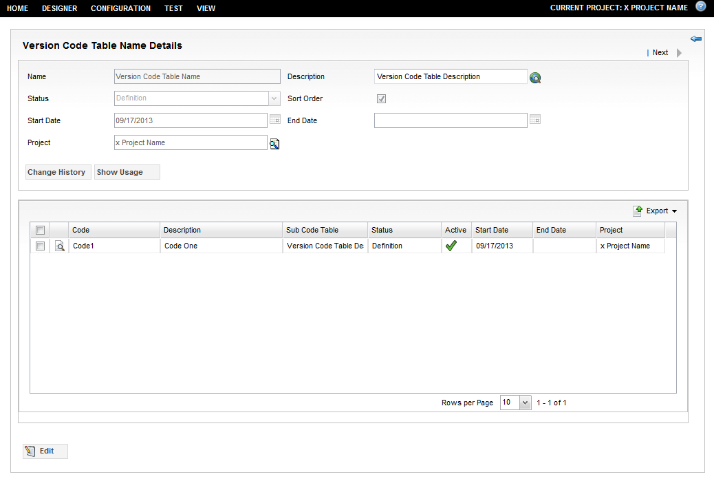

This section describes the following:
Search code tables by a code table name, a code table description or by the name or description of a code contained inside a code table. The entire name, description or just part of the name, description can be entered in the query search fields.
You can perform a code table search by following these steps:
| Field | Description |
|---|---|
| Code Table Name | Enter the full name or part of the name of the code table being searched. |
| Code Name | Enter a code that is found inside a code table being searched. |
| Code Table Description | Enter keywords to search within the description field of the code table being searched. |
| Code Description | Enter keywords to search within the description field of a code for the code table being searched. |
| Project | Select the search icon at the end of this field to invoke the Project Finder (see below). |
Note: The code tables in a table result having the model as a data structure display the description and not the code, to align with the document as model behaviour.
In addition to non-version search options, in version mode it is also possible to search code tables by projects. Use this finder to search for a code table based on a project. Select the project from the list of existing projects.
The order of the code table results can be changed.
From any column header in the results pane, via the mini down arrow icon, select the Configure Sort ... menu option which opens the Sort dialogue. From here, choose the columns and order for the sort.
Note: The code table results can also be grouped by the column titles. From any column in the results pane, via the mini down arrow icon, select the Group by [Column Title].
To view code table details, click on the Details icon (magnifying glass) next to Name of the code table or double-click on the code table row. This opens the code table details dialogue in read-only mode.

| Field | Description |
|---|---|
| Name | This field is mandatory and it must be a unique identifier of a code table in the current application context. |
| Description | The description of the code table. This field is optional. |
| Active | Defines whether the code table is active. This field is optional and is used by non-version code tables. |
| Sort Order | Allows to re-order codes inside the table. This field is optional. |
| Project | This field is used by version code tables. It identifies the project associated with the code table. |
| Status | This field is used by version code tables and is mandatory. It identifies the status (designated life cycle states) of the code table. It replaces the Active field. |
| Start Date | This field is used by version code tables and is mandatory. It identifies the effective date of the code table and must be less than or equal to the End Date. |
| End Date | This field is used by version code table, but is optional. It identifies when a code table is no longer effective. |
Below the details of the code table, a current list of codes that belong to the code table is displayed.
By default, code details are read-only.
All code properties (fields) are visible on the Detail page of the code table. Alternatively, to view code details, click on the Details icon (magnifying glass) next to Name of the code or double-click on the code row. This invokes the Details dialogue of the code.
| Field | Description |
|---|---|
| Code | This field is mandatory and it must be a unique identifier of the code in the current code table. |
| Description | The description of the code. This field is optional. |
| (Sub) Code Table | This field is optional. It can be used to reference another code table, such that all codes from the sub-table are treated as inherited in the current code table. |
| Active | Defines whether the code is active. This field is optional. A code can be active if and only if the code table is active. |
| Status | This field is used by version codes and is mandatory. It identifies the status (designated life cycle states) of the code. It replaces the Active field. A code can be active if and only if the code table is active. |
| Start Date | This field is used by version codes and is mandatory. It identifies the effective date of the code and must be less than or equal to the End Date. |
| End Date | This field is used by version codes, but is optional. It identifies when a code is no longer effective. |
| Project | This field is used by version codes. It identifies the project associated with the code. |